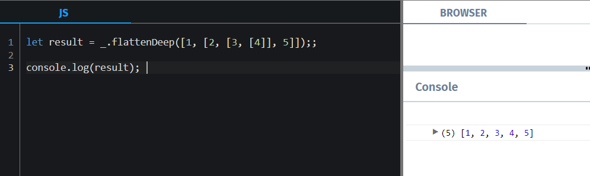
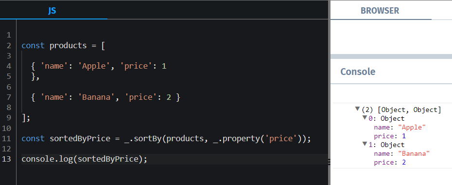
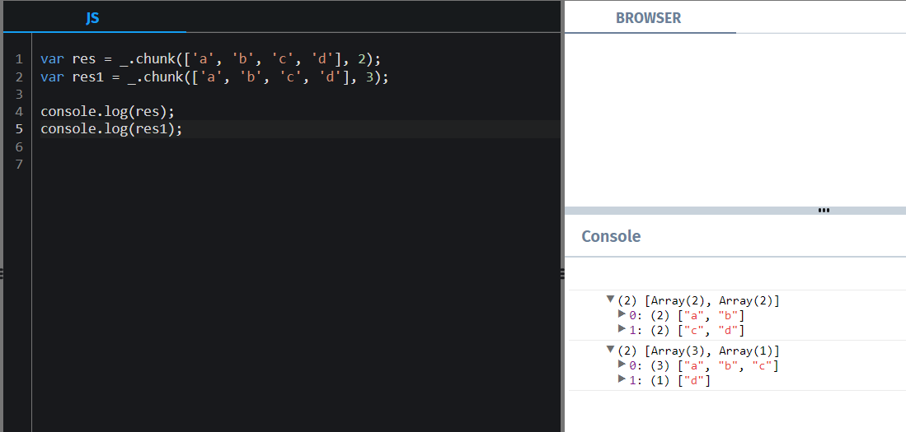

Why Loadash?
Modular Design
Comprehensive Functionality
Performance Optimization
Simplified Syntax and Enhanced Readability
Consistency Across Environments
Additional Functionality
Method Chaining
Custom Builds
Community Support and Reliability
Performance Benefits
- Optimized algorithms and data structures.
- Reduced development time and effort.
- Improved code readability and maintainability.
Key Functionality
- Data Manipulation
- Object Manipulation
- Array Manipulation
Practical Examples
How to install Loadash
Practical examples
Deep clone object
Flatting Array
Sorting
Chunk
